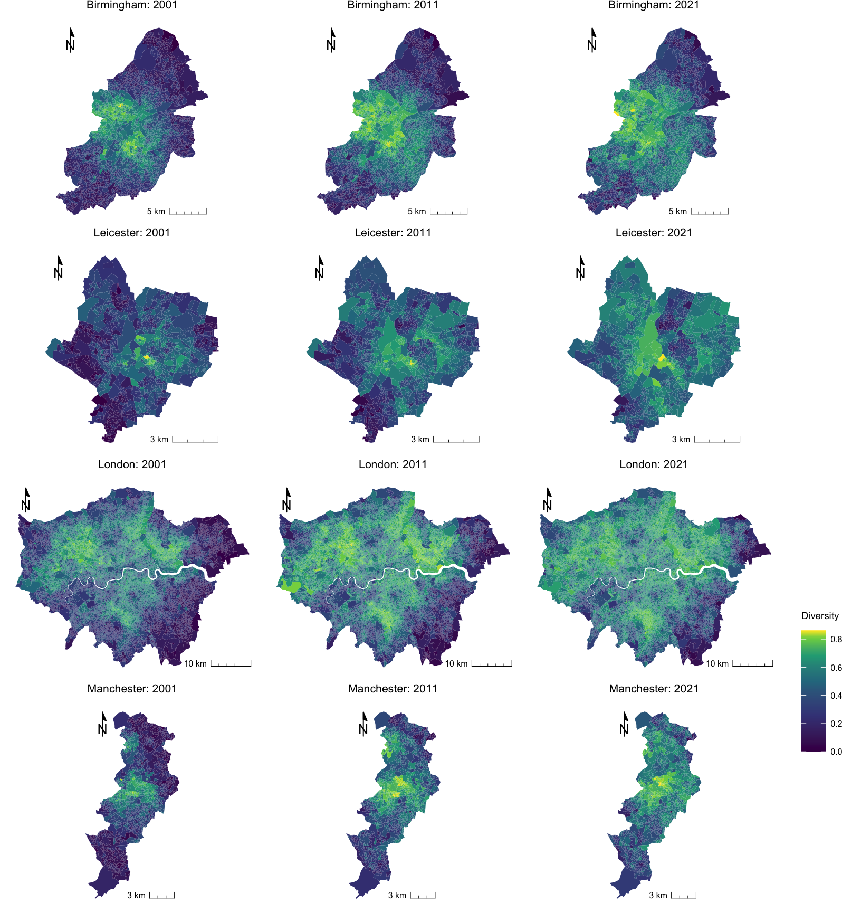
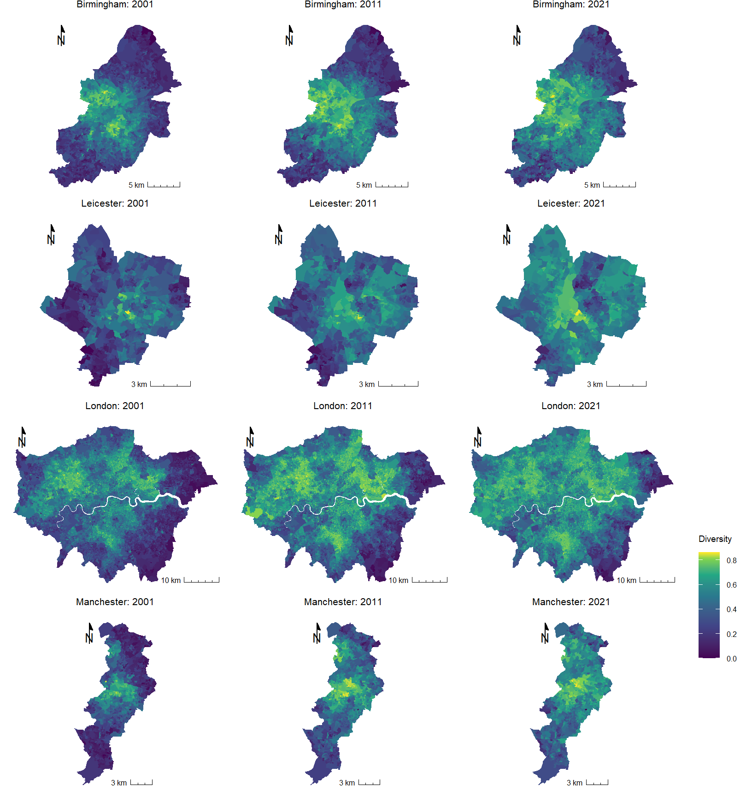

Let’s answer the question ‘why?’ with a quick example of R in use. We will not worry about the exact detail of what the code means at this stage but will largely take it as we find it, copying and pasting from this webpage into the R Console.
If you find that the + sign stays on your screen for a while and isn’t followed by > then you have either forgotten to hit Enter/Return or have not included all of the code. You can always press esc on your keyboard and try again.
Step 1
First, we will check that the necessary packages are installed and then ‘require’ them, which means to load them so they are available to use.
Next, we will download a data table published by Statistics South Africa which estimates the number of people speaking various languages in the South African Provinces in 2011. These data were downloaded from https://superweb.statssa.gov.za/webapi/. The data are found in an Excel spreadsheet, which is read in and manipulated, converting the counts into percentages.
What R allows is the opportunity to map the data without needing to go outside R to use separate software such as GIS. To do so, we will need a ‘blank map’ of the Provinces that can be joined with the data.
ggplot(data = map) +annotation_map_tile(type ="cartolight", progress ="none") +geom_sf(aes(fill = IsiXhosa), alpha =0.8) +scale_fill_gradient(breaks =classIntervals(map$IsiXhosa, n =3, style ="jenks")$brks,low ="white", high ="dark blue") +ggtitle("% Population speaking Xhosa")
The really nice thing about this is that it is now very easy to change the appearance of the map with only minor updates to the code.
Code
ggplot(data = map) +annotation_map_tile(type ="stamenwatercolor", progress ="none") +geom_sf(aes(fill = English), alpha =0.8) +scale_fill_gradient(breaks =classIntervals(map$English, n =3, style ="pretty")$brks,low ="white", high ="dark red") +ggtitle("% Population speaking English")

Code
ggplot(data = map) +annotation_map_tile(type ="thunderforestlandscape", progress ="none") +geom_sf(aes(fill = Afrikaans), alpha =0.8, col ="transparent") +scale_fill_gradient(breaks =classIntervals(map$Afrikaans, n =4, style ="equal")$brks,low ="white", high ="dark red") +annotation_north_arrow(which_north ="grid", location ="topright") +ggtitle("% Population speaking Afrikaans")

Step 5
Finally, once we are happy with it, we can export the image in a format suitable for a journal publication, for instance or to insert into other documents such as Microsoft Word.
If we now look in your working directory, they should be there:
Code
list.files(pattern ="mymap")
[1] "mymap.bmp" "mymap.jpg" "mymap.pdf"
Convinced?
Of course, maps can also be produced in open source software such as QGIS and GIS software certainly have their use. R is not automatically better or necessarily a replacement for these. However, what it does offer is an integrated environment for what we might call geographic data science: we can download data from external websites, load and tidy-up those data, fit statistical or other models to them and map the results – all from within R. Our stages of working can be saved as scripts, which are faster to change and modify than using ‘point-and-click’ operations, and we can share our code with other people (even those using different operating systems) facilitating collaborative working and reproducible social-/ science. Finally, there are lots of packages available for reading, visualising, and analysing spatial data. Some of them are summarised here. These are attractive reasons for mapping and modelling within R.
Alternatives
Aside from software such as QGIS, an interesting area of development is Geographic Data Science with Python. You can learn more about it here.
Need more convincing?
If you have time, have a look at this exercise that we sometimes use with prospective students at University open days. The idea of the exercise is not to teach the students R but to show them how we use R for geographic data science in the School of Geographical Sciences. What the exercise does is take COVID-19 data for English neighbourhoods, fit statistical models to it and map the results – all in R. Again, it is the ability to use R for all the stages shown below that makes it so useful.
---title: "A Cartographic Answer"---## An Example Using RLet's answer the question 'why?' with a quick example of R in use. We will not worry about the exact detail of what the code means at this stage but will largely take it as we find it, copying and pasting from this webpage into the R Console.{width=75}<fontsize=3>If you find that the `+` sign stays on your screen for a while and isn't followed by `>` then you have either forgotten to hit `Enter`/`Return` or have not included all of the code. You can always press `esc` on your keyboard and try again.</font>### Step 1First, we will check that the necessary packages are installed and then 'require' them, which means to load them so they are available to use.```{r, message=FALSE, warning=FALSE, results=FALSE}installed <-installed.packages()[,1]if(!("XML"%in% installed)) install.packages("XML", repos ="https://cloud.r-project.org", dependencies =TRUE)if(!("tidyverse"%in% installed)) install.packages("tidyverse", repos ="https://cloud.r-project.org", dependencies =TRUE)if(!("readxl"%in% installed)) install.packages("readxl", repos ="https://cloud.r-project.org", dependencies =TRUE)if(!("sf"%in% installed)) install.packages("sf", repos ="https://cloud.r-project.org", dependencies =TRUE)if(!("ggplot2"%in% installed)) install.packages("ggplot2", repos ="https://cloud.r-project.org", dependencies =TRUE)if(!("classInt"%in% installed)) install.packages("ggspatial", repos ="https://cloud.r-project.org", dependencies =TRUE)if(!("ggspatial"%in% installed)) install.packages("ggspatial", repos ="https://cloud.r-project.org",dependencies =TRUE)require(tidyverse)require(readxl)require(sf)require(ggplot2)require(classInt)require(ggspatial)```### Step 2Next, we will download a data table published by Statistics South Africa which estimates the number of people speaking various languages in the South African Provinces in 2011. These data were downloaded from [https://superweb.statssa.gov.za/webapi/](https://superweb.statssa.gov.za/webapi/){target="_blank"}. The data are found in an Excel spreadsheet, which is read in and manipulated, converting the counts into percentages.```{r, message=FALSE, warning=FALSE}download.file("https://www.dropbox.com/s/9thgcgl3o2pl0f2/table_2022-06-22_17-36-26.xlsx?dl=1", "language.xlsx", quiet =TRUE, mode ="wb")read_xlsx("language.xlsx", sheet ="Data Sheet 0", skip =8) %>%rename(Name =2) %>%drop_na(Afrikaans) %>%select(-1) %>%mutate(across(where(is.numeric), ~round(. / Total *100, 2))) -> languages```Here is the top of that data:```{r}head(languages)```### Step 3What R allows is the opportunity to map the data without needing to go outside R to use separate software such as GIS. To do so, we will need a 'blank map' of the Provinces that can be joined with the data.First, we will download a pre-existing map, also from [https://superweb.statssa.gov.za/webapi/](https://superweb.statssa.gov.za/webapi/){target="_blank"}.```{r, message=FALSE, warning=FALSE, results=FALSE}download.file("https://www.dropbox.com/s/oyoqhenatqfl69b/mapview.kmz?dl=1", "map.kmz", quiet =TRUE, mode ="wb")unzip("map.kmz")st_read("doc.kml") %>%select(-Description) -> map```Here is the outline of that map:```{r, message=FALSE, warning=FALSE}ggplot(data = map) +geom_sf()```### Step 4Now we can link the data table to the map```{r, message=FALSE, warning=FALSE}map %>%left_join(languages, by ="Name") -> map```and then plot one of the variables.```{r, message=FALSE, warning=FALSE}ggplot(data = map) +annotation_map_tile(type ="cartolight", progress ="none") +geom_sf(aes(fill = IsiXhosa), alpha =0.8) +scale_fill_gradient(breaks =classIntervals(map$IsiXhosa, n =3, style ="jenks")$brks,low ="white", high ="dark blue") +ggtitle("% Population speaking Xhosa")```</br>The really nice thing about this is that it is now very easy to change the appearance of the map with only minor updates to the code.```{r, message=FALSE, warning=FALSE}ggplot(data = map) +annotation_map_tile(type ="stamenwatercolor", progress ="none") +geom_sf(aes(fill = English), alpha =0.8) +scale_fill_gradient(breaks =classIntervals(map$English, n =3, style ="pretty")$brks,low ="white", high ="dark red") +ggtitle("% Population speaking English")``````{r, message=FALSE, warning=FALSE}ggplot(data = map) +annotation_map_tile(type ="thunderforestlandscape", progress ="none") +geom_sf(aes(fill = Afrikaans), alpha =0.8, col ="transparent") +scale_fill_gradient(breaks =classIntervals(map$Afrikaans, n =4, style ="equal")$brks,low ="white", high ="dark red") +annotation_north_arrow(which_north ="grid", location ="topright") +ggtitle("% Population speaking Afrikaans")```### Step 5Finally, once we are happy with it, we can export the image in a format suitable for a journal publication, for instance or to insert into other documents such as Microsoft Word.As jpeg, to print quality:```{r, message=FALSE, warning=FALSE}ggsave("mymap.jpg", device ="jpeg", width =7, height =6, units ="in", dpi ="print")```As pdf:```{r, message=FALSE, warning=FALSE}ggsave("mymap.pdf", device ="pdf", width =7, height =6, units ="in")```As bmp, to screen quality:```{r, message=FALSE, warning=FALSE}ggsave("mymap.bmp", device ="bmp", width =7, height =6, units ="in", dpi ="screen")```If we now look in your working directory, they should be there:```{r, message=FALSE, warning=FALSE}list.files(pattern ="mymap")```## Convinced?Of course, maps can also be produced in open source software such as [QGIS](https://www.qgis.org/en/site/){target="_blank"} and GIS software certainly have their use. R is not automatically better or necessarily a replacement for these. However, what it does offer is an integrated environment for what we might call geographic data science: we can download data from external websites, load and tidy-up those data, fit statistical or other models to them and map the results -- all from within R. Our stages of working can be saved as scripts, which are faster to change and modify than using 'point-and-click' operations, and we can share our code with other people (even those using different operating systems) facilitating collaborative working and reproducible social-/ science. Finally, there are **lots** of packages available for reading, visualising, and analysing spatial data. Some of them are [summarised here](https://cran.r-project.org/web/views/Spatial.html){target="_blank"}. These are attractive reasons for mapping and modelling within R.## Alternatives{width=100}Aside from software such as QGIS, an interesting area of development is Geographic Data Science with Python. [You can learn more about it here](https://geographicdata.science/book/intro.html){target="_blank"}.## Need more convincing?If you have time, have a look at [this exercise](https://profrichharris.github.io/openday/){target="blank"} that we sometimes use with prospective students at University open days. The idea of the exercise is not to teach the students R but to show them how we use R for geographic data science in the School of Geographical Sciences. What the exercise does is take COVID-19 data for English neighbourhoods, fit statistical models to it and map the results -- all in R. Again, it is the ability to use R for all the stages shown below that makes it so useful.<fontsize=2>Source: [R for Data Science](https://r4ds.had.co.nz/introduction.html){target="_blank}</font>